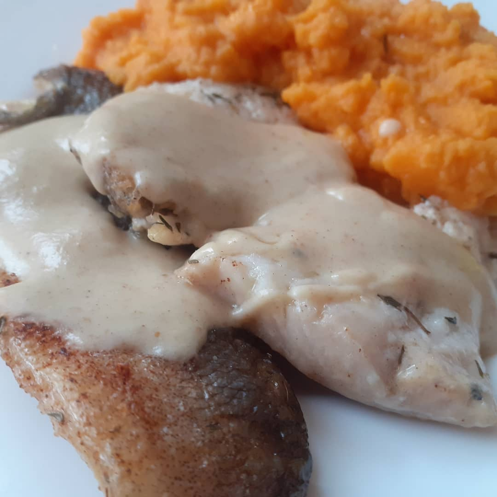

Pečená ryba podľa @riso1984 — Normy Jedál
Dnešný zdravý obed pečená ryba🐟 na masle🧈, pyré zo sladkých🍬 zemiakov🥔 a horčicová omáčka.
#dnesjem #dnesvarim #dnesvařím #dnesjim #dnesjemzdravo #typnaobed #typnaoběd #codnesvarim #dnesfotim #pecenaryba #sladkezemiaky #instafood #slovakinsta #bezservitky #bataty #sweetpotato #zdravejedlo #zdravejedlo #zdravyobed #deliciousfood #sered #varenie #vareni